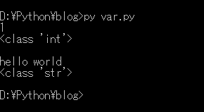
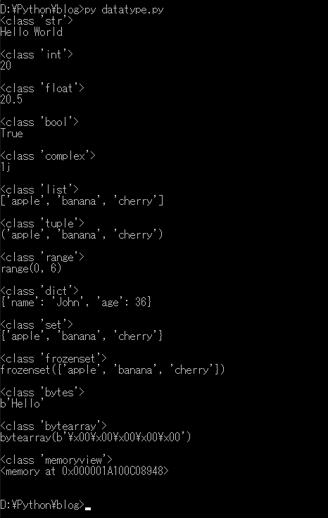

[Python] 02. データタイプ、変数宣言そしてコメントする方法
こんにちは。明月です。
この投稿はPythonでデータタイプ、変数宣言そしてコメントする方法に関する説明です。
どのプログラムでも最初はデータタイプから確認します。
Pythonでデータタイプを説明する前に、簡単に変数宣言する方法に説明します。
Pythonの場合はC++やJavaなどのコンパイル言語と違って別に指示タイプが無いです。Javascriptみたいにvarやletを使う必要もありません。
ただ、使いたい変数名を宣言して値を格納すればPython内部で自動に変数タイプを指定して値を格納します。
#a変数に1を格納する。
a = 1;
#aの値を出力する。
print(a);
#a変数のデータタイプを出力する。
print(type(a));
#改行
print("");
#a変数にHello worldを格納する。
a = "hello world";
#aの値を出力する。
print(a);
#a変数のデータタイプを出力する。
print(type(a));

結果をみればaの変数に1を格納したらintタイプになることを確認できます。後で、"hello world"のデータを格納したら自動にStringタイプに変換されます。
Pythonではこんなに自動にデータタイプを設定してデータを変数に格納します。
※これかスクリプト言語のいい点ですが、個人的にプログラムが複雑になるとこのデータタイプが固定にならないので、データが変換されると何処で変換されたか把握が大変になります。
Pythonにはどのデータタイプがあるかを確認しましょう。
# 文字列タイプ
str_var = "Hello World";
print(type(str_var));
print(str_var);
print("");
# 定数タイプ
int_var = 20;
print(type(int_var));
print(int_var);
print("");
# 実数タイプ
float_var = 20.5;
print(type(float_var));
print(float_var);
print("");
# ブールタイプ(true false)
bool_var = True;
print(type(bool_var));
print(bool_var);
print("");
# 複素数タイプ
complex_var = 1j
print(type(complex_var));
print(complex_var);
print("");
# リストタイプ
list_var = ["apple", "banana", "cherry"];
print(type(list_var));
print(list_var);
print("");
## タプルタイプ
tuple_var = ("apple", "banana", "cherry");
print(type(tuple_var));
print(tuple_var);
print("");
# rangeタイプ(= リストタイプ)
range_var = range(6);
print(type(range_var));
print(range_var);
print("");
# Dictionaryタイプ(マップタイプ)
dict_var = {"name" : "John", "age" : 36}
print(type(dict_var));
print(dict_var);
print("");
# 集合タイプ
set_var = {"apple", "banana", "cherry"};
print(type(set_var));
print(set_var);
print("");
# frozenset集合タイプ
frozenset_var = frozenset({"apple", "banana", "cherry"});
print(type(frozenset_var));
print(frozenset_var);
print("");
# byteタイプ
bytes_var = b"Hello"
print(type(bytes_var));
print(bytes_var);
print("");
# byte配列タイプ
bytearray_var = bytearray(5)
print(type(bytearray_var));
print(bytearray_var);
print("");
# byteメモリタイプ
memoryview_var = memoryview(bytes(5))
print(type(memoryview_var));
print(memoryview_var);
print("");

データタイプが一般プログラム言語より多いです。基本的に文字列、定数、実数、ブールは別に他のプログラム言語でもよくあるタイプです。面白いことは複素数タイプがあることです。
複素数タイプは実数と虚数を計算するためのタイプです。数学的な計算や数値計算を行う時に必要なデータタイプだと思います。
そしてリストとタプル、Dictionaryタイプがあります。リストは文字通り、リストとしてデータを挿入、削除が可能なデータタイプです。リストは挿入、削除が簡単にできるタイプならタプルは配列みたいに一回に挿入すると削除ができないタイプです。
つまり、タプルが宣言されたら、挿入、削除、修正ができません。 Dictionaryはマップタイプみたいにキーを設定してデータを挿入するタイプです。
集合タイプはsetとfrozensetのタイプがあります。 集合タイプはと数学の集合と関係があるタイプです。、和集合、積集合などを計算のためのタイプです。
setはデータの変更が可能、frozensetは変更が不可能な集合タイプです。
byteとbyte配列とbyteのメモリタイプはバイナリと関係があるデータタイプです。つまり、特定のファイルをバイナリで読み込む時にbyteに変換することです。
バイナリタイプに変換されたbyteタイプはデータ修正が不可能です。
でも、仕様によってバイナリデータを直接に修正する時もあります。その時にbyteタイプからbyte配列タイプに変換して修正が可能です。
memoryviewタイプはバイナリデータとしてではなく、データとしてメモリに格納することです。つまり、イメージならイメージバイナリを持つことではなく、イメージままを持つことです。
Pythonで扱うデータタイプで集合タイプ、複素数タイプがあることが面白いです。このデータタイプがあるからPythonの統計プログラムや集合、数値的な計算で強力しますといいますが、私はまだそのレベルではないのでよく知りません。
特に私が複素数タイプまで扱うことができるかをしれません。
Pythonののコメントは、コメントの開始に＃に設定します。
領域コメントはシングルクォートやダブルクォートを連続に三つをつけばコメント領域になります。
"""
コメント領域
"""
'''
コメント領域
'''
a = 1 # コメント
# コメント # a = 1
上の最後の行で#で区間コメントをやろうと思いますが、#がある地点で後はすべてコメント領域になるのでa=1はコメント処理になります。
# コメント #
a = 1
上の形式は正しいです。
ここまでPythonでデータタイプ、変数宣言そしてコメントする方法に関する説明でした。
ご不明なところや間違いところがあればコメントしてください。
- [Python] 15. クラスを継承する方法2020/06/15 18:20:07
- [Python] 14. クラスプロパティ(Property)2020/06/12 17:45:13
- [Python] 13. クラス関数(class method)とダック・タイピング、そして特殊メソッド2020/06/11 19:42:29
- [Python] 12. クラス(Class)を使う方法2020/06/10 19:33:33
- [Python] 11. デコレーター（Decorator）を使う方法2020/06/09 17:27:18
- [Python] 10. モジュールとパッケージ(import)2020/06/08 19:07:50
- [Python] 09. 例外処理する方法2020/06/05 17:11:47
- [Python] 08. ジェネレータ(Generator)2020/06/04 18:46:08
- [Python] 07. globalとnonlocal2020/06/03 20:34:49
- [Python] 06. 関数(function) - インライン関数、callbak、ラムダ(lambda)そしてクロージャ2020/06/02 20:51:22
- [Python] 05. コンプリヘンション(Comprehension)を使用する方法2020/06/01 19:38:58
- [Python] 04. 制御文(if, while, for, break, continue)とインデント2020/05/29 21:09:08
- [Python] 03. Pythonでリスト(list)とタプル(tuple)、そしてディクショナリ(dictionary)、セット(set)2020/05/27 18:49:08
- [Python] 02. データタイプ、変数宣言そしてコメントする方法2020/05/26 18:16:52
- [Python] 01. Python3をインストールする方法(Anacondaインストール)2020/05/25 19:02:44
- [Design pattern] 1-2. ビルダーパターン(Builder pattern)2021/06/11 19:06:28
- [Design pattern] 1-1. シングルトンパターン(Singleton pattern)2021/06/09 19:40:05
- [Design Pattern] デザインパターンの紹介2021/06/08 20:42:36
- [Tools] Dbeaver(無料Sql queryブラウザツール)2021/04/28 18:26:49
- [Bootstrap] HTMLデザインのフレームワークのBootstrap紹介2020/07/30 19:06:36
- [Python] メール(smtplib)を送信する方法2020/07/27 18:38:43
- [Python] HttpConnection(requestsモジュール)でウェブサーバーで接続する方法2020/07/20 14:41:51
- [Python] Excel(openpyxl)を扱う方法2020/07/16 16:40:31
- [Python] ファイル圧縮、解凍(zipfile)する方法2020/07/14 19:14:22
- [Python] Apache cgiでPythonを使う方法2020/07/09 19:58:19
- [Python] Web serverを起動する方法(http.server)2020/07/09 00:13:13
- [Python] WebSocketを使う方法2020/07/07 17:29:18
- [Python] PythonとJavaのソケット通信する方法2020/07/03 18:35:50
- [Python] PythonとC#のソケット通信2020/07/01 19:28:22
- [Python] INI(環境設定ファイル)を扱う方法2020/06/30 18:26:01